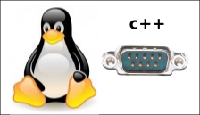

He escrito un mini-tutorial sobre la programación del puerto serie en Linux en C++. Para acceder al puerto serie desde C++ he utilizado la biblioteca libserial, que está disponible en los repositorios de Ubuntu (apt-get install libserial-dev)
Necesito programar el puerto serie en C++ para que desde el OpenMR se puedan controlar también robots modulares reales además de hacer simulaciones.
Hola, siempre sigo tus post, la verdad que son muy interesantes, te queria comentar que el link al tutorial no anda, apunta a un texto “Tutorial: Puerto serie……”
Me interesa mucho el tuto…
Desde ya gracias, y continua así!!
Hola MarkU,
Ya lo he arreglado. Gracias por informar del “bug” 😉